Libro de dirección visual · Para el equipo de producción
Santa Clara produce
Documental de campaña de 8 a 10 minutos. 21 imágenes de referencia y el plano final, con su dirección de fotografía.

Alcaldía de Santa Clara · Somos Progreso Blackjack Consulting · 30 de septiembre de 2026 · Uso interno
Qué es este libro
Estamos haciendo un documental de campaña de 8 a 10 minutos que se publica por escenas durante ocho semanas. Cada escena es una pieza que funciona sola en redes y WhatsApp; ordenadas por unidad narrativa, son la película.
Este libro contiene 21 imágenes de referencia, tres por cada una de las siete unidades del relato, más el plano final. Cada imagen va con su ficha de dirección de fotografía.
Las imágenes marcan la luz, el encuadre, la paleta y el gesto que buscamos en el rodaje real. No son para publicar tal cual, salvo los planos sin personas (llave, río, acta, botas), que sí pueden usarse como insertos.
Sobre las personas
Las referencias muestran personas de espaldas, de perfil o desenfocadas. Ningún rostro de habitante de Santa Clara se genera con inteligencia artificial: en el rodaje se filma gente real, con consentimiento firmado. El único rostro que se integra desde fotografía real es el del candidato, en las tres imágenes de la unidad del Mentor.
Cómo leer cada ficha
Plano
El tipo de plano y, debajo, qué se ve y qué pasa en cuadro.
Luz
Hora y calidad de la luz.
Óptica
Lente y diafragma.
Cámara
Altura, soporte y foco.
Paleta
Los colores de la escena, con muestras de la referencia.
Encuadre
Formato de rodaje y lugar del sujeto en cuadro.
Vestuario
Solo en la unidad del Mentor.
Personas
Solo donde aparece gente.
Evitar
Lo que no entra en este plano.
Par
La imagen gemela, si la tiene.
Si la imagen y la ficha no coinciden, manda la ficha. Las referencias están en vertical 3:4; el formato de rodaje y la posición en cuadro son los que indica cada ficha.
La tira de imágenes es el índice: toca una para ir a su plano. Toca cualquier referencia para verla a pantalla completa y desliza para pasar a la siguiente. En computadora, las flechas izquierda y derecha pasan de plano en plano.
Cinco reglas que atraviesan todo
1
Cámara a la altura de los ojos o de las manos. Nunca contrapicado para el candidato, nunca dron alto.
2
Solo luz natural: amanecer, golden hour, nublado, ventana. Nunca flash, nunca estudio.
3
Textura de película 35 mm con grano fino, contraste suave. Nada de HDR ni de nitidez de teléfono.
4
Cada pieza abre con un segundo de manos en acción y cierra con uno o dos segundos de la línea horizontal del río, sin texto.
5
Los colores de la alianza aparecen solo en el cierre con el llamado a la acción, nunca en la escena.
El look base
Fotografía documental cinematográfica. Luz natural. Película 35 mm con grano fino, contraste suave y halación leve. Sin HDR, sin look de teléfono.
Amazonía ecuatoriana, provincia de Pastaza: vegetación húmeda y niebla.
Fuera de cuadro, siempre
Texto y logos en cuadro
Banderas, salvo en la caravana
Dron
Gran angular
Estética de stock
Colores neón
Cielo azul de postal
Flash
Cada ficha suma lo que hay que evitar en ese plano en particular.
El arco de color
Las imágenes van del gris-verde desaturado del Problema al turquesa a plena saturación de la Recompensa. Ordenadas por unidad, el arco se ve solo. Cinco pares unen el principio con el final: son los cortes que unen la película.
Santa Clara produce, pero lo que produce no vuelve: la llave no da agua, la cosecha se queda en el camino, la obra anunciada no existe. Queremos frustración con dignidad, no rabia ni miseria.
Luz plana de nublado, paleta gris-verde, planos fijos en trípode, silencio.
Estas tres imágenes tienen su gemela en la Recompensa: hay que rodarlas pensando en el par.
Una llave de agua metálica gastada, en la pared exterior de una casa rural de bloque sin enlucir, manchada de humedad y con musgo en la base. Está abierta y solo cuelga una gota del borde. Debajo, un balde plástico vacío. Silencio visual: nada más en cuadro.
Luz
Día nublado después de la lluvia, plana y gris-verde. Superficies mojadas.
Óptica
50 mm · f/2.8
Cámara
Trípode. Foco exacto en la gota; el patio con vegetación, desenfocado al fondo.
Paleta
Desaturada, negros levantados, contraste bajo.
Encuadre
16:9 · la llave en el tercio superior derecho.
Evitar
Personas, agua abundante, llave nueva de catálogo.
Un saco de yute lleno de naranjilla y un racimo de plátano verde, dejados a un lado de un camino vecinal de tierra encharcado. Huellas profundas de camioneta llenas de agua marrón, maleza alta a los lados. El camino se pierde en la niebla.
Luz
Nublado temprano, hora azul, sin sombras.
Óptica
35 mm · f/4
Cámara
Trípode, a la altura del saco, ligeramente por encima.
Paleta
Gris-verde y barro. El naranja de la naranjilla es el único color, contenido.
Encuadre
16:9 · el saco en el tercio inferior izquierdo, el camino en diagonal hacia la niebla.
Evitar
Personas, frutas de otra región, envases industriales.
Una valla metálica de anuncio de obra pública, oxidada y descolorida, con el panel en blanco: ningún texto legible. Maleza y enredaderas la cubren en parte. Detrás, un terreno vacío con charcos.
Luz
Cielo blanco de nublado.
Óptica
35 mm · f/5.6
Cámara
Trípode, a la altura de los ojos.
Paleta
Desaturada: blanco sucio, verde apagado, óxido, gris de cielo.
Encuadre
16:9 · centrado y simétrico, la valla en el tercio central.
El héroe de esta historia no es el candidato: es el santaclareño que produce. La familia de la chacra, la mujer de la feria, el joven de la cancha. Se identifica por las manos, siempre en acción, nunca posando.
Luz cálida de amanecer o golden hour, lente 50 mm, cámara a la altura de las manos y de los ojos.
En el rodaje real estas personas sí muestran el rostro y llevan su nombre y su comunidad en pantalla. En las referencias no se inventa ningún rostro.
Una mujer adulta ordena bloques de panela envueltos en hoja y frutas amazónicas sobre una mesa de feria de madera, bajo una carpa sencilla de lona. Sus manos, en primer plano, acomodan el producto. Delantal de tela sencilla.
Luz
Mañana, lateral, entrando por el costado abierto de la carpa.
Óptica
50 mm · f/2.8
Cámara
A la altura de la mesa.
Paleta
Ocre, marrón de panela, verde, tela de colores contenidos. Saturación media-alta.
Encuadre
16:9 · la mujer en el tercio derecho, la mesa cruzando el cuadro.
Personas
En rodaje muestran el rostro y llevan su nombre y su comunidad en pantalla. Consentimiento firmado.
Un joven corre con un balón de fútbol en una cancha de tierra, al atardecer. Polvo dorado suspendido en el aire, arcos de madera sin red, colinas verdes y nubes bajas al fondo. Ropa deportiva sencilla, sin marcas ni escudos.
Luz
Golden hour. Contraluz cálido con halación fuerte.
Óptica
35 mm · f/2.8
Cámara
Al hombro, siguiéndolo de lado a la altura de la cintura. Ligero desenfoque de movimiento.
Paleta
Naranja de atardecer y verde. Saturación alta.
Encuadre
16:9 · el joven en el tercio izquierdo, avanzando hacia la derecha.
Personas
En rodaje muestran el rostro y llevan su nombre y su comunidad en pantalla. Consentimiento firmado.
Evitar
Escudos de equipo, estadio de césped sintético.
Unidad 3 de 7
El Mentor
Mesías Villacrés es el que nunca se fue: treinta y cinco años en la finca, la chacra y la cancha. No es el héroe, es el técnico que sabe cómo. Se reconoce por las botas de caucho embarradas y el cuaderno de campo, y por una postura fija: al lado de la gente, nunca al frente ni arriba; frente al río, pequeño y de perfil.
Luz suave de sombra abierta o de ventana, nunca sol directo en el rostro. Expresión serena, mirada que escucha, sin sonrisa de campaña.
Vestuario fijo: camisa de trabajo verde apagado arremangada, pantalón de campo, botas de caucho negras con barro. Las tres referencias parten de la fotografía real del candidato.
3.1Retrato ambiental en la chacraRetrato de campaña
Retrato ambiental de medio cuerpo
Mesías de pie en el borde de una chacra, entre plantas de plátano y yuca. Mira ligeramente fuera de cámara, hacia la derecha, con expresión serena y atenta, sin sonrisa forzada. Lleva un cuaderno de campo de tapa dura, cerrado, en la mano derecha.
Luz
Sombra abierta bajo un árbol, suave y lateral desde la izquierda. Niebla al fondo.
Óptica
85 mm · f/2
Cámara
Exactamente a la altura de sus ojos. Fondo desenfocado, pero reconocible como chacra.
Mesías sentado en una banca de madera, dentro de una casa comunal de paredes de tablas. Se inclina hacia adelante y escucha con atención, sin hablar. Cuaderno de campo abierto sobre la rodilla, lápiz en la mano. Frente a él, fuera de foco y de espaldas, las siluetas de varias personas sentadas.
Luz
Ventana lateral a la izquierda, cálida. Claroscuro suave, polvo en el haz de luz.
Óptica
50 mm · f/2
Cámara
A la altura de sus ojos, desde un costado. Nunca frontal.
Paleta
Madera, verde que entra por la ventana, papel crema.
Encuadre
16:9 · Mesías en el tercio derecho.
Vestuario
Camisa de trabajo verde apagado arremangada, pantalón de campo, botas de caucho negras con barro.
Evitar
Micrófono, tarima, Mesías al centro del cuadro, flash.
Mesías de pie en la orilla de piedras grises de un río de aguas turquesa-verde, de perfil, con las botas de caucho dentro del agua hasta el tobillo. Mira la corriente con las manos a los costados. Se ve pequeño frente al río y a la vegetación densa de la otra orilla.
Luz
Amanecer, lateral, con niebla que se levanta del agua y halación suave.
Óptica
35 mm · f/4
Cámara
A la altura de los ojos.
Paleta
Turquesa-verde, piedra gris, verde profundo.
Encuadre
16:9 · el río ocupa dos tercios del cuadro; Mesías, en el tercio izquierdo inferior.
Vestuario
Camisa de trabajo verde apagado arremangada, pantalón de campo, botas de caucho negras con barro.
Evitar
Brazos abiertos, Mesías de frente a cámara, contrapicado.
Unidad 4 de 7
El Tótem
El río Piatúa es lo único que une a colonos y kichwas: economía para unos, identidad para otros, agua para todos. Queremos el río como personaje: turquesa-verde, piedras grises, niebla de amanecer, luz cenital filtrada por el dosel.
La gente aparece pequeña, de espaldas, dentro del agua; nadie posee el río.
De estas tomas sale la «línea del río» que cierra cada pieza.
4.1Amanecer en el PiatúaApertura de la película y línea del río
Plano general fijo
El río corre cristalino, turquesa-verde, entre grandes piedras grises redondeadas. Selva densa en las dos orillas. La niebla baja se levanta del agua y los primeros rayos de sol la atraviesan de lado, con halación dorada. Sin personas.
Luz
Amanecer. Primer sol lateral a través de la niebla.
Óptica
35 mm · f/5.6
Cámara
Fija, a un metro sobre el agua.
Paleta
Turquesa-verde saturado en el agua, verde profundo en la selva, blanco de niebla.
Encuadre
16:9 con guías 2.39 · la línea del río, horizontal, en el tercio inferior.
Un grupo de ocho a diez personas, adultos y jóvenes, vistos de espaldas y de perfil, recoge ramas y desechos de la orilla de piedras del río, con sacos de yute y botas de caucho. Algunos tienen el agua a la rodilla. Muchas manos en acción y nadie en el centro del encuadre.
Luz
Media mañana, cenital, filtrada por el dosel. Reflejos móviles del agua.
Óptica
35 mm · f/4
Cámara
A la altura de los ojos, desde dentro del agua.
Paleta
Turquesa, verde, ocre de los sacos.
Encuadre
16:9 · composición horizontal.
Personas
Gente real de Santa Clara, con consentimiento firmado.
Evitar
Una persona protagonista al centro, basura en primer plano.
Una vertiente de agua cristalina brota entre raíces retorcidas, musgo espeso y piedras oscuras, en una ladera de bosque. El agua cae en hilos finos a un pequeño estanque de fondo de piedra. Helechos y hojas anchas alrededor. Sin personas.
Luz
Cenital y verde, filtrada por el dosel. Brillos puntuales en el agua, sombra suave.
Óptica
50 mm · f/2.8
Cámara
A la altura del estanque.
Paleta
Verde profundo, agua cristalina, marrón de raíces. Saturación alta en el verde.
Encuadre
16:9.
Evitar
Personas, tubería, cascada grande.
Unidad 5 de 7
El Aprendizaje
Lo que el cantón aprendió: la obra sin estudios daña, la promesa sin fuente de dinero es mentira, la minka se hace con planificación. El símbolo es el acta firmada frente al letrero vacío del Problema, y el cuaderno del técnico que mide antes de hacer.
Interiores de casa comunal, luz cálida de ventana o bombilla, madera y papel, tinta azul. Ritmo pausado, claroscuro suave.
Una hoja con un acta escrita a mano, sobre una mesa de madera gastada, dentro de una casa comunal. Una mano adulta firma con bolígrafo de tinta azul en la parte inferior de la hoja. Al lado, un sello de madera y una taza de barro con guayusa humeante. El texto del acta no se lee: solo se percibe la caligrafía.
Luz
Una sola ventana lateral, al atardecer. Cálida, claroscuro suave, tono ámbar.
Óptica
50 mm · f/2.8
Cámara
Cenital, a 60 centímetros.
Paleta
Madera, papel crema, tinta azul, ámbar.
Encuadre
16:9.
Evitar
Flash, computadora.
Ojo con la referenciaLa referencia quedó tomada en ángulo. En rodaje es cenital, a 60 centímetros: es el encuadre que repite 7.3.
Una casa comunal de paredes y piso de tablas. Filas de bancas con personas sentadas, vistas de espaldas, que escuchan a alguien que habla al frente, fuera de foco. Tres o cuatro manos levantadas entre el público. Una ventana lateral, a la izquierda, corta el espacio con un haz de luz cálida en el que flota polvo.
Luz
Ventana lateral a la izquierda: un haz cálido con polvo en el aire.
Óptica
35 mm · f/2.8
Cámara
A la altura de los ojos de las personas sentadas.
Paleta
Madera, verde que entra por la ventana, ropa de colores contenidos, ámbar.
Encuadre
16:9.
Personas
Gente real de Santa Clara, con consentimiento firmado.
Un cuaderno de campo abierto sobre una mesa de madera, con un croquis a lápiz de la red de tuberías de agua de una comunidad rural: flechas, cotas y una lista numerada escrita a mano. Encima, un lápiz de carpintero y una regla de madera. Al borde del cuadro, una taza de barro. Sin personas.
Luz
Ventana lateral, de tarde. Cálida y suave.
Óptica
50 mm · f/2.8
Cámara
Ligero picado, desde la altura del pecho.
Paleta
Papel crema, grafito, madera, ámbar.
Encuadre
16:9.
Evitar
Personas, tableta o computadora, flash.
Unidad 6 de 7
La Gran Batalla
Quince días de campaña, sin debate, en un cantón que se gana con dos mil votos. La batalla no es contra una persona: es contra la resignación y contra el ausentismo de los que están lejos. Se ve en movimiento: atardecer y crepúsculo, faros de camioneta, banderas de comunidades, la cancha con luces, el bus que trae de vuelta a los hijos.
Cámara al hombro desde un vehículo, saturación alta, contraste alto.
El candidato va entre la gente, nunca en tarima ni al frente.
Una fila de camionetas y motocicletas avanza por la calle principal, de tierra, de un pueblo pequeño al atardecer. En las cajas, personas de espaldas y de perfil sostienen racimos de plátano, sacos y banderas de colores lisos, sin ningún emblema, con los brazos en alto. Polvo dorado en el aire, faros encendidos, casas de madera y cemento a los lados.
Luz
Golden hour a contraluz, con halación fuerte. El cielo pasa a azul de crepúsculo.
Óptica
35 mm · f/2.8
Cámara
Al hombro, desde la caja de una camioneta, a la altura de las cajas. Ligero desenfoque de movimiento.
Paleta
Naranja, azul de crepúsculo, colores lisos de las banderas.
Encuadre
16:9.
Personas
Gente real de Santa Clara, con consentimiento firmado.
Evitar
Emblemas en las banderas, colores de partido, tarima.
Ojo con la referenciaLa referencia quedó tomada desde atrás y desde arriba, ya en hora azul, y muestra una bandera tricolor. Nada de eso es guía: manda la ficha.
Un bus interprovincial detenido a un lado de la carretera, en la entrada de un pueblo envuelto en niebla. La puerta delantera está abierta y una persona joven baja, de espaldas, con una mochila al hombro. Las luces interiores del bus siguen encendidas, en tono ámbar. Colinas verdes desaparecen en la niebla.
Luz
Hora azul, con el primer sol lateral asomando.
Óptica
35 mm · f/2.8
Cámara
A la altura de la vereda.
Paleta
Azul de amanecer, ámbar de luces, verde de niebla.
Encuadre
16:9 · el bus en el tercio izquierdo, la persona que baja, al centro.
Personas
Gente real de Santa Clara, con consentimiento firmado.
Evitar
Nombre de la cooperativa o letrero de destino legibles.
Una cancha de tierra al crepúsculo, con las luces ámbar de cuatro postes recién encendidas. Jugadores jóvenes en desenfoque de movimiento, con ropa deportiva sencilla y sin marcas. Gente sentada en gradas bajas de madera, vista de espaldas. Vapor y humedad visibles en los haces de luz. Cielo azul profundo con nubes bajas.
Luz
Crepúsculo y luz de los postes de la cancha.
Óptica
35 mm · f/2.8
Cámara
A la altura de las gradas.
Paleta
Azul de crepúsculo, ámbar de focos, verde oscuro.
Encuadre
16:9.
Personas
Gente real de Santa Clara, con consentimiento firmado.
Evitar
Escudos de equipo, estadio grande, césped sintético.
Unidad 7 de 7
La Recompensa
Lo que Santa Clara ya se ganó con su trabajo: agua en la llave, plata en la feria, el compromiso cumplido. Son las imágenes del Problema invertidas, rodadas en el mismo lugar, con el mismo trípode y el mismo encuadre, en una mañana clara después de la lluvia.
Toda la paleta a plena saturación: turquesa, verde, ocre, blanco limpio. Alivio y orgullo, no euforia.
La misma llave metálica gastada, en la misma pared de bloque sin enlucir, ahora con agua: un chorro claro y abundante cae en un balde plástico que se llena. Las gotas brillan al sol. La pared ya está seca y al lado hay un pequeño macetero con una flor roja.
Luz
Mañana clara y lateral, después de la lluvia. Cielo despejado reflejado en el agua.
Óptica
50 mm · f/2.8
Cámara
El mismo trípode de 1.1. Foco en el chorro; el patio, verde brillante y desenfocado.
Paleta
Plena saturación: blanco limpio, verde, brillo de agua.
Encuadre
16:9 · el mismo encuadre de la llave seca, la llave en el tercio superior derecho.
Sacos de yute abiertos, llenos de naranjilla, y racimos de plátano sobre una mesa de feria de madera, bajo una carpa de lona clara. Dos pares de manos adultas intercambian billetes y producto sobre la mesa. Una balanza de plato antigua. Gente en desenfoque detrás.
Luz
Mañana clara filtrada por la carpa, cálida y limpia.
Óptica
50 mm · f/2.8
Cámara
A la altura de la mesa.
Paleta
Naranja de naranjilla, verde de plátano, ocre de yute, a plena saturación.
Encuadre
16:9 · los sacos en el tercio inferior izquierdo, como en la cosecha en el lodo.
Personas
Gente real de Santa Clara, con consentimiento firmado.
La misma hoja del acta escrita a mano, sobre la misma mesa de madera gastada, ahora con una marca de verificación grande, en tinta azul, junto a un punto de la lista. Al lado, una fotografía impresa pequeña en la que se distingue una tubería de agua instalada sobre tierra, y una taza de barro con guayusa. El texto del acta no se lee.
Luz
Mañana clara de ventana lateral, blanca y limpia, sin claroscuro.
Óptica
50 mm · f/2.8
Cámara
Cenital, a 60 centímetros.
Paleta
Papel, madera, azul, luz blanca.
Encuadre
16:9 · el mismo encuadre del acta firmada.
Evitar
Flash, computadora.
Ojo con la referenciaLa referencia muestra una hoja impresa, con tabla. En rodaje es la misma acta manuscrita de 5.1, en la misma mesa y con el mismo encuadre.
El mismo río de aguas turquesa-verde entre grandes piedras grises, ahora a media mañana de un día claro, sin niebla. Agua brillante y transparente, vegetación de las orillas a plena saturación después de la lluvia. Un pescador pequeño, visto de espaldas, en la orilla lejana.
Luz
Media mañana de un día claro, a pleno sol y sin niebla.
Óptica
35 mm · f/5.6
Cámara
Fija, a un metro sobre el agua, como en 4.1.
Paleta
Turquesa, verde profundo, gris de piedra, a plena saturación.
Encuadre
16:9 con guías 2.39 · la línea del río, horizontal, en el tercio inferior.
Evitar
Dron alto.
Ojo con la referenciaEn la referencia el pescador quedó al centro y más grande. En rodaje va pequeño, de espaldas, en la orilla lejana.
Mañana clara de ventana lateral, blanca y limpia, sin claroscuro.
50 mm · f/2.8
Cenital, a 60 centímetros.
Par 4 de 5
El acta
Mismo lugar, mismo trípode, mismo encuadre, distinta luz.
Qué cambiaDe la firma a la marca de cumplido. Del ámbar del atardecer a la luz blanca de la mañana.
Ojo con la referenciaLas dos referencias no comparten encuadre: 5.1 quedó en ángulo y 7.3 muestra una hoja impresa. En rodaje, la misma acta manuscrita, en la misma mesa, cenital a 60 centímetros.
Media mañana de un día claro, a pleno sol y sin niebla.
35 mm · f/5.6
Fija, a un metro sobre el agua, como en 4.1.
Cómo viene la carpeta
Las imágenes van numeradas como en este libro, de 1.1 a 7.4, en una carpeta por unidad, con el libro en PDF al lado.
Junto a cada imagen hay que leer la introducción de su triada: ahí está lo que buscamos en el rodaje real.
Los cinco pares van lado a lado en la carpeta Pares, porque son la instrucción más importante del libro: mismo lugar, mismo trípode, mismo encuadre, distinta luz.